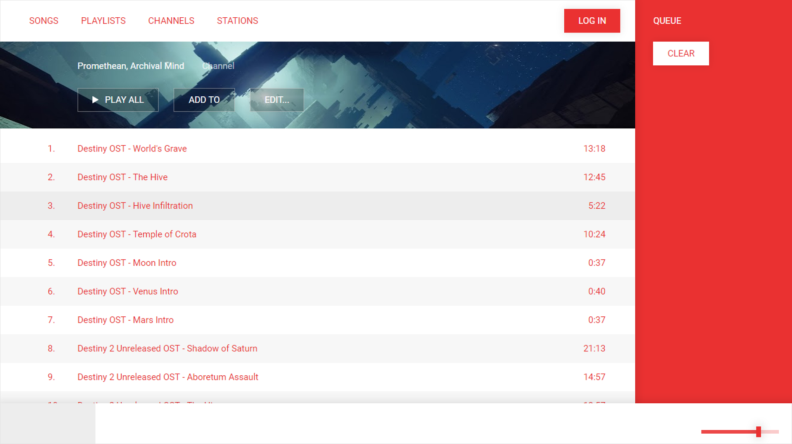
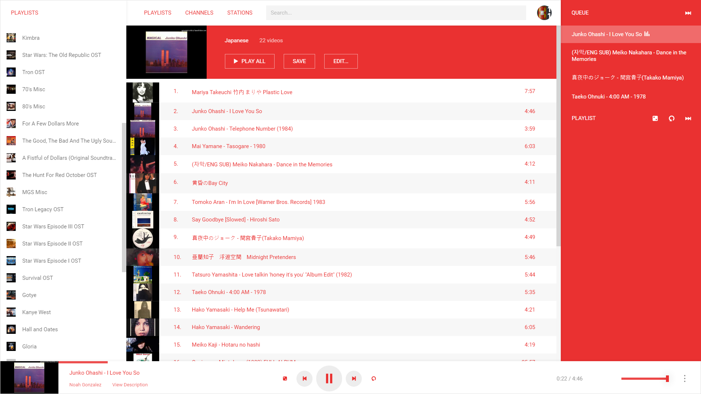

Objective
To design a website that allows listening and management of Youtube playlists more efficiently than current site.
Background
Having grown frustrated with Youtube's clunkiness when it comes to finding, saving, and listening to music playlists, I decided to create my own functional site that would be more suited for my personal use.
I started by making prototypes for the main pages in Figma, and quickly coded them with vanilla HTML and JS
As I decided on more features to include, the styling and layout changed slightly. Overall testing and use also affected most design decisions.

Final
The site was about 90% functional after a few months of off-on work. As it was being used, feedback was obtained and changes were made over time, such as docking playlists to the left, seperating the queue and playlist functionalities, and other small features.
The site works using Youtube's API, which allows interoperability between this site and the official one. Playlists saved here can be viewed on Youtube.com, and vice versa. YS also has features that were, at the time, non-existant on the official site. Queueing, replicating other's playlists, looping tracks, and other features were present which Youtube later added to their platform with the unveiling of Youtube Music, a paid subscription service.
